A robot; but specifically, an *embodied* robot that can move, and make its own decisions.
It takes in input from sensors, and processes those inputs, and sens outputs to components - whether they be for actioning or locomotion.
Robots have their benefits, like repeatability and reliability, but also their downsides, such as job replacement, cost, and inabilities in certain tasks.
We want robots to be **autonomous** -- this is different to *automatic*, which is just carrying out present events, but *autonomous* means it can make decisions. Robots vary in autonomy, from the remote-controlled to fully autonomous.
Robots also have to consider limited processing power, and also energy consumption in their mobile bodies.
### Introduction
Sensing three fundamental questions:
* Where are we?
* Where do we want to go?
* How do we get there?
Tend towards *probabilistic methods*, as they scale well, but they tend to come with increasing computational complexity to simulate.
* Characterising
* Commonly Used
### Characterising Sensing
The sensing process goes:
1. **Transducer**: converts the physical/chemical signal into electric
2. **Signal Conditioning**: wanting signal to be linear and proportional to detection (amplification may be needed)
3. **Computer Interface**
4. **Data Reduction, Analysis**: data compressed if required, then used
5. **Perception**: Analysis of models.
Sensors can be classified based on things:
* **Internal <--> External** (Proprioceptive <--> Exteroceptive): Either measure internal values, like wheel speed, load, heading, etc. Or measure information about environment, like distances, light, etc. Can be debatable sometimes which one a sensor belongs to.
* **Passive <--> Active**: Just listening, like light detector. Or actively emitting energy, like radar.
Other things to consider include:
* **Bandwidth/Frequency**: the speed of the sensor. Hz.
* **Accuracy**: Defined as $1-(\fr{\rm{measured val} - \rm{true val}}{\rm{true val}})$ -- the percentage correctness. The top of that fraction is **error rate**
* **Precision/Repeatability**: Reliability of results. $\rm{precision} = \fr{\rm{range of values}}{\sigma}$ for stdev sigma.
* **Resolution**: The smallest possible difference that can be detected. 【例】A sensor range of 5V, stored in 8 bits, would have a resolution of $\fr{5}{2^8} = 0.0195\rm{V} = 19.5\rm{mV}$
* **Linearity (because we like linear signals)**: Variation of output to input signal. Not as important if data postprocessed.
* **Sensitivity**: How sensitive sensor is to desired property and how *insensitive* it is to undesired properties. Ratio of output to input change. **Cross sensitivity** is sensitivity to things that actively interfere in your desired thing - e.g. compass and magnets.
* **Measurement range**: self explanatory
* **Power, weight, size, cost.**: self explanatory
**Calibration** is the process of finding limits, fixing reference points, so that we know what the sensor is measuring.
### Common Sensors
***Wheel/Motor encoders.*** wheel has holes in, shine a light beam through, and by counting the number of times the beam is broken in a second, the wheel RPM is found.
Can use this to find the distance travelled, *but*-- there will be error if the wheel spins but does not travel, and there will be error from the width of the slats, which can build up a lot. This error decreases with more smaller slats (A, B, C)
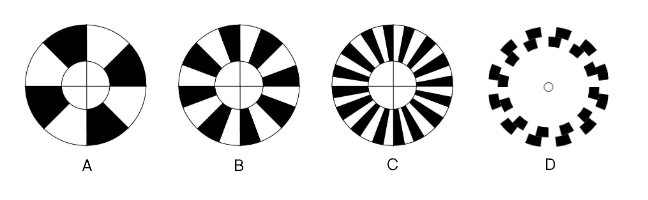
Wheel slat configurations
But often the *quadrature* (D) encoder is used, with two rows offset at 90°, thus giving a better reading and the travel direction.
***Heading Sensors.*** determine robot orientation and inclination. Can be internal, like a gyroscope, or external, like a compass.
This along with velocity can estimate position -- this is **dead reckoning**
***Accelerometers.*** Various methods. Simplest is a weight with mass $m$ on a spring with constant $k$. When accelerate, displacement $x$ is recorded. Can use $F=ma=kx$ to work out $a$.
Directional and limited depth of field, but cheap.
***Gyroscope.*** Measure and maintain orientation and angular velocity. Degrees per second.
***Inclinometer.*** Measures inclination (noooo, you don't say?). Two types: **mercury switch** (binary) and **electrolyte sensor** (analogue)
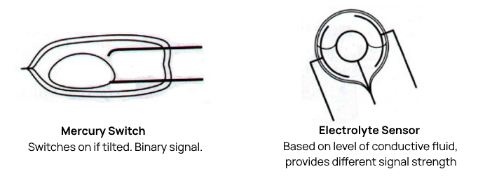
All of these can be combined into an **inertial measurement unit** (IMU)
***Light/Temp Sensor.*** Done with resistors. Photoresistors change resistance to light, and thermal resistors change to heat.
***Touch Sensor.*** There are two types: Contact (binary isTouching sensor) and tactile (detects the surface shape).
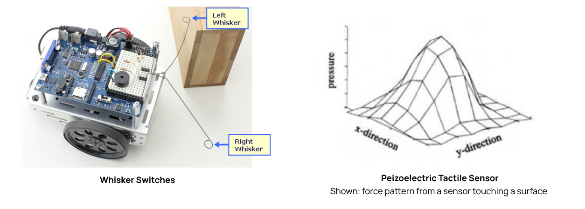
Whisker sensors/binary sensors are cheaper, but have some limitations and problems. It's not pressure sensitive, and especially for whisker sensors, you must consider *switch bounce*.
Tactile sensors use piezoelectric material, whcih changes resistance based on pressure, and so can get shape, force, surface texture, etc.
***Passive Infra-Red Sensor.*** (PIR) used in motion detectors, monitors two different rays of infra-red light levels next to each other. When a living object passes through the sensor range, there is a heat differential between the two beams, and the sensor will trip.
***Hall effect sensor.*** Measures external magnetic fields. Can be used with known magnetic fields to infer dstance.
### Range Sensors
Range sensors are very important for mobile robotics, and can be used with internal sensors to calculate position.
***Time of Flight Ranging.*** (ToF)
Sending a signal out, waiting for a bounce back, and getting a range distance, because you know how quick the signal goes.
Bats do this (echolocation), as well as other **sonar** devices. **Lidar** is also used.
Since light is much quicker than sound, it requires more accuracte sensors and computers, and so hobbyist equipment tends to stick to sonar.
The sensing quality may not be great depending on factors such as angle of facing wall, or interference or other factors.
***Phase Shift Measurement.*** Measuring difference in wavelength (phase) between a sent and received signal. L ike the system used to detect gravitational waves.
However, this only works where the distance is less than the wavelength of the beam -- otherwise it just doesn't work, since 360° wavelengths are not able to be told apart.
***Triangulation ranging.*** Send two beams set a known distance apart to a common target, and use the angles of the beams to calculate the distance. **(important)**
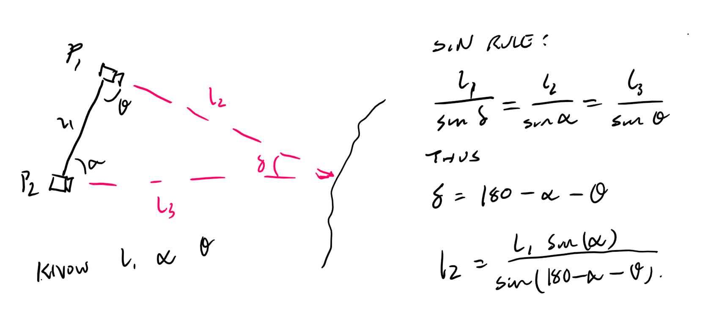
Triangulation Process (Remmber: Sine Rule)
***Active Infrared.*** Sends out an infrared beam, just below the frequency of ambient infrared. Fairly cheap.
***Sonar.*** Using ultrasonic sound waves, far above human hearing.
Speed of sound dependent on temperature and humidity, and so it is really only good at low ranges, up to ~ 5m.
Very simple to do, but:
Sound doesn't travel in rays exactly, and you can also get *crosstalk* (interference between different robots / sounds from the environment). It is still ultimately quite slow too, because sound is really not that quick.
***Radar.*** Does the same as sonar but uses radio signals. They are long range and relatively accurate, but are also supceptible to interference.
***Laser Rangefinding/Lidar.*** Using laser light. Fast, accurate, but has a limited range to a few hundred metres, is power hungry, and is also *very expensive*.
2D lidar is expensive, 3D is even more expensive, but you can imitate a 3D lidar by using a 2D one, and manually moving it perpendicular to the plane it can see in ("Push-broom lidar").
Digital imaging and image processing have a significant amount of overlap with Digital Forensics.
Beacons and GPS
Beacons are basically known points of reference.
***Trilateration*** is the process of finding out a robot's psition using at least 3 beacons (hence tri-).
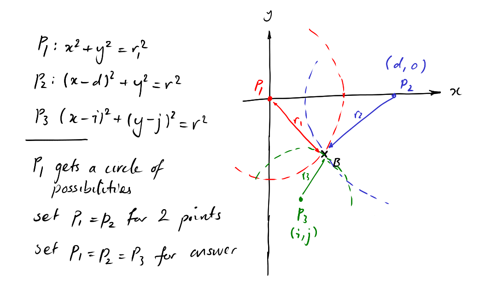
Trilateration - need to do a lot of simultaneous equation solving.
We always base (0,0) off one of our beacons, for simplicity. Having two beacons aligned to an axis also makes solving the simultaneous equations easier.
Note, you may have to work this out in 3D: $r_1^2 = x^2 + y^2 + z^2$, but in this case we align all three beacons to the plane $z$, preventing us from having any offsets there.
***GPS*** is a common use of trilateration, though
* GPS uses *at least **4*** beacons (satellites)
* Each beacon sends out both a *position* and a *time*
* Both are used to determine location.
Even in 3D, only three spheres are needed to complete trilateration. However, GPS receivers do not tend to have expensive ultra-accurate atomic clocks inside them, and because of the distance between and the speed of the satellites, milliseconds of difference can be 100s of metres out.
Thus the fourth satellite is a redundancy.
There are some downsides - notably that it may be difficult to see 4 satellites simultaneously if sky view is limited, like in cities.
To solve this, *differential GPS* also uses ground-based beacons, which allow direct line of sight to it even within cities.
Digital Imaging
Digital images are captured through sensors, which receive photons.
There are different designs of image sensors, two popular ones being CMOS and CCD.
A sensor can only receive light, not colour, so we could (a) use three times the sensors (3+ times the cost) or (b) use an RGB filter pattern.
The resulting RGB image mix is then put through **demosaicing**, where the missing R, G, B information is filled in through interpolation.
The **RGB colour space** can be represented as a 3D cube, with the $x, y, z$ axes being R,G,B respectively. We can see more colours than RGB, but it's good enough.
***CYMK colour space*** is for print, and is made of cyan, yellow, magenta, and black.
***HSV*** is Hue, saturation, value, and makes a kind of pie. Going 360° round the pie gets you all your hues. Going out from the middle of the pie increases saturation (how colourful), whilst going up from the bottom of the pie increases value (brightness).
Often don't need so much resolution or colour depth -- waste data that just takes up processing time.
-> Remove said data. Can:
* decrease pixels/resolution
* reduce colour depth - often times, binary (1 bit) is sufficient.
Binary images are produced by some threshold function (0 below, 1 above), based on some characteristic (not necessarily brightness! Often the threshold is about change in intensity, i.e. edge detection.)
If binary is not enough, then can store in greyscale, since it only takes one channel instead of three.
The **pinhole camera** is one of the first imaging devices, and uses the principle of letting light pass through a small hole (**aperture**), and focusing on a back plate, which makes the image in focus. It's a simple model to approximate the imaging process.
A **lens** works in a similar way, taking rays and concentrating them onto a focal point.
The ***Thin lens equation*** $\fr{1}{f} = \fr{1}{u} + \fr{1}{v}$ is an equation that must be satisfied for an object to be in focus.
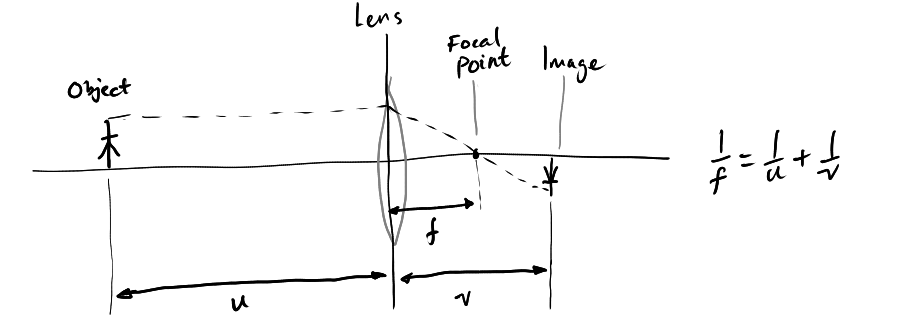
We can use a changing focus to generate a depth map of the image.
We can also add an aperture in front of the lens, to control our range of *approximate focus*. The smaller the aperture, the wider range of distances will be in "good enough" focus.
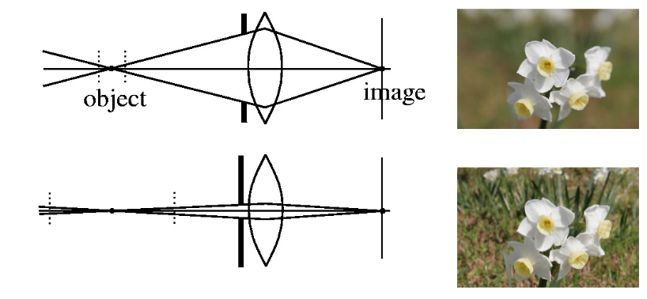
The FoV (field of view) is an angular measure of how much of the space you can capture.
Images behind the lens are upside down, which is annoying for calculations. ***Perspective Projection*** reverses the focus to in front of the screen -- we have an "image plane" onto which 3D objects are projected.
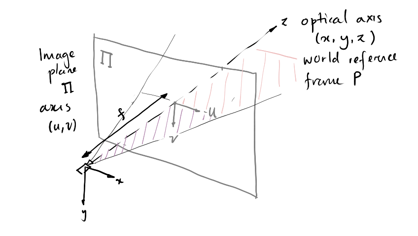
We project from **3D world coordiates** $P:(x,y,z)$ onto a **2D image plane** $\Pi:(u,v)$. This can be done using the *similarity of triangles*. World coordiates have origin at the camera, and image coordinates have origin at some point on the image.
Note the purple triangle (from $f$ along the $u$ axis) is (mathematically) **similar** to the pink extended triangle (from $z $ along the $x$ axis). Same applies for $v, y$.
Thus by similarity of triangles,
$$ \fr{f}{z} = \fr{u}{x} = \fr{v}{y} $$
And we can convert scene coordinate to image coordinate via
$$
(x,y,z) \; \lra \;(\fr{f}{z}x, \fr{f}{z}y)
$$
Mapping from 3D to 2D is non-linear (thus it loses depth): (1,1) image could be (1,1,1), (2,2,2), (3,3,3), ... scene.
We can use **homogenous coordiates** with a homogenising coordinate $w = 1$:
\begin{matrix}
\tilde{\vec{p}}\t = (u, v, 1) &\tilde{\vec{P}}\t = (x, y, z, 1)
\end{matrix}
And converting down,
\begin{matrix}
\tilde{\vec{p}}\t = (x, y, w) \implies p = (\fr{x}{w}, \fr{y}{w})
&
&\tilde{\vec{P}}\t = (x, y, z, w) \implies P = (\fr{x}{w}, \fr{y}{w}, \fr{z}{w})
\end{matrix}
We are convertig "4D" to "3D", and if $w$ changes, we scale as appropriate.
Since going to 2D loses depth information, there are several ways we can reconstruct that depth information.
***Stereo cameras*** work like triangulation by having two cameras a known distance apart. (**important**)
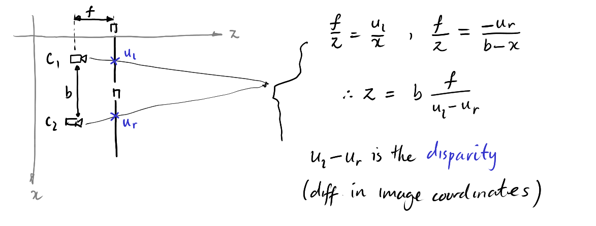
Cameras $C_1, C_2$ measure the same spot at slightly different coordinates -- using the similarity of triangles rule we can work out how far away $z$ that spot is.
***Structure from motion*** builds depth by moving around and taking multiple photos -- it basically is just stereo cameras, but extended.
Image Processing
#### Pixel Processing
***LSIS.*** Linear shift invariant systems:
> A function that transforms one function into another `(LSIS : func -> func)`
* It is **linear**: any linear combination results in the same linear coefficients: $Af_1(x) + Bf_2 (x) \;\lra \; \rm{LSIS}\; \lra\; Ag_1(x) + Bg_2(x)$.
* It is **shift invariant**: $f(x) \lra \rm{LSIS} \lra g(x) \implies f(x-a) \lra \rm{LSIS} \lra g(x-a)$.
I.e. it is a **convolution** of two functions $f(x) * h(x)$ for some **kernel function/kernel filter** $h(x)$.
For images a convolution basically involves taking a $k \times k$ grid of coefficients, multiply with image pixel values and sum them to get one output pixel. The kernel is then shifted and this is repeated.
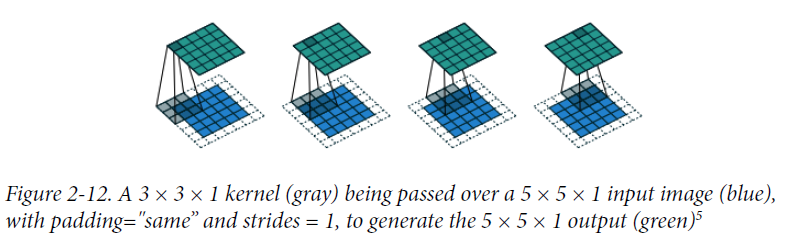
A convolution operation (David Foster, in the context of CNNs)
As shown the image can be padded so that the output of the convolution is the same size as the input.
There are many different convolution kernels, which can be represented as matrices.
**Smoothing** filters can come in many forms, such as the
* box filter, which is uniform
$$h(u,v) = \fr{1}{9} \begin{bmatrix}
1&1&1\\1&1&1\\1&1&1
\end{bmatrix}$$
* gaussian filter, which is
$$h(u,v) = \fr{1}{2\pi\sigma^2} \exp(-\fr{u^2 + v^2}{2}) \approx \fr{1}{16} \begin{bmatrix}
1&2&1 \\ 2&4&2 \\ 1&2&1
\end{bmatrix}
$$
(where the width of the kernel is $ 2\pi\sigma^2$, or basically anything not in that matrix is zero)
**Line detection** filters come in four different angles, to detect lines running in those four directions. The falling diagonal one is shown:
$$
\begin{bmatrix}
2 & -1 & -1 \\ -1 & 2 & -1 \\ -1 & -1 & 2
\end{bmatrix}
$$
And the others simply have the twos oriented differently.
**Median** filter removes salt and pepper noise by taken the median of all pixels in the kernel. It also blurs edges.
For more information see CS355 Forensics.
**Edge filters** are generally rather important.
Edges are defined as significant changes in brightness (intensity). Since we treat an image as a function $I(x,y)$, edges are where the gradient of that function $\nabla I(x,y) = [I_x, I_y]$ (dimension-wise partial derivatives) are large.
From $\nabla I(x,y)$ we can find the magnitude $\sqrt{I_x^2 + I_y^2}$ and the direction $\tan^{-1}\left({\fr{I_x}{I_y}}\right)$ of the gradient.
Naturally though we approximate this through discrete kernels, which for each direction is
\begin{matrix}
\begin{bmatrix}
-1 &-1&-1 \\ 0&0&0 \\ 1&1&1
\end{bmatrix} &
\begin{bmatrix}
-1&0&1 \\ -1&0&1 \\ -1&0&1
\end{bmatrix} &
\begin{bmatrix}
0 & 1 & 1 \\ -1 & 0 & 1 \\ -1 & -1 & 0
\end{bmatrix}
& \rm{etc.}
\end{matrix}
We can also get the **second derivative** (the **laplacian**) for more localised edge info, but they tend to be noisier and doesn't include orientation:
\begin{matrix}
\begin{bmatrix}
0 & -1 & 0 \\ -1 & 4 & -1 \\ 0 & -1 & 0
\end{bmatrix}
&
\begin{bmatrix}
-1 & -1 & -1 \\ -1 & 8 & -1 \\ -1 & -1 & -1
\end{bmatrix}
&
\begin{bmatrix}
1 & 4 & 1 \\ 4 & -20 & 4 \\ 1 & 4 & 1
\end{bmatrix}
\end{matrix}
The **canny edge detector** is a method of edge detection that resists noise, by
* smoothing image with gaussian filter
* computing its gradient
* finding the gradient magnitude and orientation
* **hysteresis thresholding**: ignoring edges with magnitudes less than a set lower bound
* Select a single maximum pixel across the width of an edge.
If the lower bound is high, then "weaker" edges may be lost.
**Edge linking** addresses this by making two thresholded images $I_{low}$ and $I_{high}$, for two different bounds.
Use $I_{low}$ to link up $I_{high}$ by: for a pixel in $I_{low}$, if any of these pixels' *8 neighbours* exist in $I_{high}$, keep it as well.
#### Interest point detection
To identify features of importance, for some importance. Used in say, place recognition, motion estimation.
e.g. image matching between two cameras with offset perspectives.
* which requires a **repeatable** (can detect same points independently)
* and **discriminative** (can match up points) detector. Some patches are easier to match, especially ones with a lot of contrast.
* are robust to transformations (like perspective distortion)
**Corner detection** is useful. A corner is an intersection of 2 or more edges.
Because a corner only looks like the same corner in one specific image patch, if you move the image patch the intensities change significantly, not true for edges and blank patches.
The ***Harris corner detection*** uses sum-squared difference of two shifted patches:
$$SSD(u,v) = \sum_u \sum_v w(x,y) (I(u+x, v+y) - I(u, v))^2 $$
Where $w(x,y)$ is the window function that essentially isolates the image to one "window" or "patch". This can be flat (1 if in, 0 if out) or gaussian.
We can look at derivative points, and plot them on an $x,y$ axis. We can draw an ellipse around these points to get two radii ("eigenvalues") $\lambda_1, \lambda_2$
* if $\lambda_1 \approx \lambda_2$ and they are both small (points clustered around centre), then likely to be flat.
* if $\lambda_1 \ll \lambda_2$ or vice versa (points spread in line), then edge
* if $\lambda_1 \approx \lambda_2$ and they are both **large**, then likely corner.
Apply non-maximum suppression again to get corner points.
* Because it's an ellipse, the eigenvalues stay the same on rotation -- rotation invariant
* (Partially) invariant to intensity, as we use derivatives (sensitive to threshold).
* **not** invariant to scale!
***SIFT*** for scaled invariant feature transform.
SIFT is a method that is **localised**, **distinctive**, generates a large **quantity** of features, is **efficient**, and **extensible** to different feature types.
It
1. Finds extrema, peaks in intensity in the *second derivative of scale space* (a set of spaces of images at various scales)
2. Sift through to find key points
3. Assign evaluation to each point
4. Describe each point using a "SIFT descriptor"
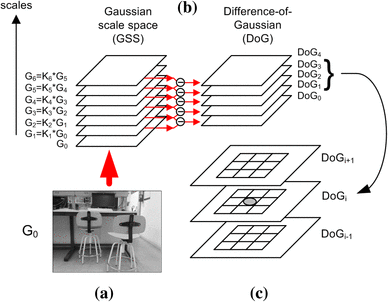
SIFT process [(src)](https://link.springer.com/article/10.1007/s11554-018-0781-0)
SIFT finds lots of candidate points, then removes ones via some rule (e.g. too low contrast).
The lower down in scale space, the more detailed the image is. The higher up, the less. So a SIFT point in a higher level corresponds to a larger area on the main image. We use the "difference of gaussians" to get the second derivative of state space, and pick extrema from that.
We can get the orientation of each pixel in the area of a key point, and put them into a weighted histogram by their gradient magnitude (and a gaussian falloff),
and any peaks above 80% of highest peak are taken as orientations of the key point.
We can also overlay a 16×16 window around a key point, and work out the magnitude weighted gradients of each 4×4 block. Put this into an eight bin histogram for every 45° of rotation, and you get a 128-long feature set which can then be used elsewhere.
### Introduction
There are two fundamental interactions between a robot and its environment: Sensor measurements, and control actions.
Thus we have
* $z_t$: the measurement data
* $u_t$: the control data, i.e. the actions the robot makes.
Robot sensing is imprecise, and so we use probability distributions to model our *beliefs*.
Our beliefs are initially "flat": there is a uniform distribution of where we could be in the world.
When we observe something, we can use our given knowledge of where it is to re-evaluate our belief to have higher certainty around more possible spots.
As we repeat this, our probability distribution gets more and more certain around a single spot, hopefully.
### Probability and Simple Estimation
State estimation is based on probability. You will need to know probability. This page is not going to contain all the probability rules.
* A probability density function (PDF) $p(X = x)$ is a function that always integrates to 1. Discrete probabilities sum to 1.
* The law of total probability states $$P(x) = \sum_{i=1}^k P(x \land y_k) = \sum_{i=1}^k P(x|y_i)P(y_i)$$
* Bayes theorem, hopefully I don't need to state it by now? Also, in bayes, $p(y|x)$ is the **likelihood**, $p(x)$ is the **prior**, and $p(y)$ is the **evidence**
Given a 4 room maze, with rooms $a$ to $d$. Initially, the robot is equally likely to be in any of the four rooms: $P(X=x) = 0.5 \;\forall x \in \{a,b,c,d\}$.
The robot has a sensor $z$ that tells what room it's in with 80% accuracy, and has a 20% chance to be off by one every time. So if the robot is in room $a$, the probabilities will be like:
$$\begin{matrix}a & b & c & d \\0.8 & 0.1 & 0 & 0.1\end{matrix}$$
Given bayes $p(x|z) = \frac{{p(z|x)p(x)}}{{p(z)}}$ we want to update our **belief of the prior** $p(x)$ using our sensor model.
e.g try $p(x=a|z=b)$:
$$
p(x=a|z=b) = \frac{p(z=b|x=a)p(x=a)}{p(z=b)}
$$
We know $p(z=b|x=a) = 0.1$ from the model, $p(x=a)$ from the initial prior belief, and no idea about $p(z=b)$.
But we can use $p(z) = \sum\limits_{i=1}^n p(z|x_i)p(x_i)$, or we can use a **normalisation constant** $\eta$, which just enforces that the resulting probabilities should sum to 1. Basically, we can just ignore the evidence and normalise.
Thus, $P(x=a|z=b) = \eta \cdot 0.1 \cdot 0.25 = 0.025 \eta$. $P(x=b|z=b) = \eta\cdot 0.8 \cdot 0.25 = 0.2\eta$, and so on. Thus we get
$$
\begin{matrix}\textrm{Room} & a & b & c & d \\ P(x) & 0.025\eta & 0.2\eta & 0.025 \eta & 0\end{matrix}
$$
Solving for $\eta$ we get
$$
\begin{matrix}\textrm{Room} & a & b & c & d \\ P(x) & 0.1 & 0.8 & 0.1 & 0\end{matrix}
$$
And this is our new updated prior.
### State Estimation
State estimation is estimating our **belief** of the current state given past **observations** $z_1..z_t$, and past **controls** $u_1..u_t$.
$$Bel(x_t) = p(x_t | u_{1..t}, z_{1..t})$$
Reformulating this with bayes we have
$$
\begin{align*}
Bel(x_t) &= \eta \cdot p(z_t | x_{1..t-1},u_{1..t}, z_{1..t-1}) \cdot p(x_t | u_{1..t}, z_{1..t-1})
\end{align*}
$$
And assuming **sensor independence**: that current results are indpendent from past results, we get
$$
\begin{align*}
Bel(x_t) &= \eta \cdot p(z_t | x_t) \cdot p(x_t | u_{1..t}, z_{1..t-1})\\
&= \eta \cdot p(z_t | x_t) \cdot \int p(x_t | u_{1..t}, z_{1..t-1}, x_{t-1}) \cdot p(x_{t-1}|u_{1..t-1}, z_{1..t-1}) dx_{t-1} \pod{1}\\
&= \eta \cdot p(z_t | x_t) \int p(x_t | u_t, x_{t-1}) \cdot Bel(x_{t-1}) dx_{t-1}. \pod{2}
\end{align*}
$$
Where in (1) we use **total probability** to sum over all results, and (2) we use **markov independence**: *the probability of $x_t$ is dependent only on $x_{t-1}$* to simplify down into a recursive formulation.
$$
\eta \cdot p(z_t | x_t) \int p(x_t | u_t, x_{t-1}) \cdot Bel(x_{t-1}) dx_{t-1}.
$$
* Where $\eta$ is the normalisation constant,
* $p(z_t | x_t)$ is the current observation $z_t$ in the current state $x_t$,
* then you integrate over $p(x_t|u_t , x_{t-1})$ which is the probaility of appearing in the current state $x_t$ given action $u_{t-1}$ and previous state $x_{t-1}$,
* multiplied by the **prior belief** of the previous state $Bel(x_{t-1})$.
* For which we work out the **posterior belief** $Bel(x_t)$.
Implementing this, we need to specify the movement (state-action) and observation models, based on our own knowledge, and represent the belief somehow.
The methods for doing this are called **filters**, of which we have several to look at.
### Discrete Filter
The equation we highlighted is called the **recursive bayes filter**.
It can be broken down into two stes
1. **Prediction** of state based on action: $\overline{Bel}(x_t) = \int p(x_t | u_t, x_{t-1} ) Bel(x_{t-1})$
2. **Measurement** to correct prediction: $Bel(x_t) = \eta \, p(z_t|x_t) \,\overline{Bel}(x_t)$
We need to specify our **motion model** $p(x_t|u_t, x_{t-1})$ and our **observation model** $p(z_t|x_t)$.
The integral also needs to be made discrete. If we have a continuous space, then often a histogram-based approximation method to "collapse" it down to discrete space.
Then, $\int$ becomes $\sum\limits$, and $\sum\limits$ becomes a matrix multiplication, and we add a normalisation step for the resulting state vector.
***Example.*** Suppose a robot is in two rooms, either blue $b$ or orange $o$.
Assume the robot follows a static transition model, where it has a 0.7 chance to stay in the same room, and a 0.3 chance to move. We can represent this in a transition table / matrix $\vec{T}$:
$$
\begin{array}{c|cc}
\textrm{move} & b & o \\ \hline
b & 0.7 & 0.3 \\
o & 0.3 & 0.7
\end{array} \;= \begin{bmatrix} 0.7 & 0.3 \\ 0.3 & 0.7 \end{bmatrix} = \vec{T}
$$
Where each value represents the probability of transitioning from the state on the row to the state on the column. So the top right 0.3 is the probability of going from $b$ to $o$, or $p(o|b)$.
You'll need to know how to construct this matrix.
Assume the robot can sense the room colour with some certainty.
* if it is in blue, it has a 0.9 chance to sense blue
* if it is in orange, it has a 0.8 chance to sense orange
$$
\begin{array}{c|cc}
\textrm{sense} & b & o \\ \hline
b & 0.9 & 0.1 \\
o & 0.2 & 0.8
\end{array} \;=
\begin{bmatrix} 0.9 & 0.1 \\ 0.2 & 0.8 \end{bmatrix} = \vec{B}
$$
Where $\vec{B}$ is our observation model matrix.
We initialise our state to a beginning assumption $$\vec{f}_{0} = \begin{bmatrix} 0.5 \\ 0.5 \end{bmatrix}$$
Suppose that we have the observations `blue, blue, orange, blue, blue`. We can create a list of observation matrices $\vec{O}_t$, which is a **diagonal** matrix that for an observation $\diamond$ gives the probabilities of observing $\diamond$ in each state, so
$$
\begin{matrix}
\vec{O}_{z_t=\diamond} = \begin{bmatrix} p(z=\diamond|b) & 0 \\ 0 & p(z=\diamond|o) \end{bmatrix}
&
\vec{O}_{z_t=b} = \begin{bmatrix} 0.9 & 0 \\ 0 & 0.2 \end{bmatrix} &
\vec{O}_{z_t=o} = \begin{bmatrix} 0.1 & 0 \\ 0 & 0.8 \end{bmatrix}
\end{matrix}
$$
Then the recursive bayes filter $\eta \cdot p(z_t | x_t) \int p(x_t | u_t, x_{t-1}) \cdot Bel(x_{t-1}) dx_{t-1}$ is defined as
$$
\vec{f}_t = \eta\;\vec{O}_t\;\vec{T}\t\vec{f}_{t-1}
$$
Simply iterate the matrix multiplications.
The normalisation constant is also written as $c^{-1}$.
Linear Gaussian Filters
### Contents
1. [Kalman Filters](#gaus-kalman)
2. [Extended Kalman Filters](#gaus-extk)
3. [Unscented Kalman Filters](#gaus-NOTSMELLY)
### Introduction
We have a bayes filter, but we have had to make it discrete to work with it.
"Gaussian filters" is our step in asking "how about we not?".
### Kalman Filters
> The smelly filter (you'll see why later)
Kalman filters work of gaussians, that is either $p(x) \sim N(\mu, \sigma^2)$ for the *univariate* case, and $p(\vec{x}) \sim N(\bs{\mu}, \vec{\Sigma})$ in the *multivariate* case.
Where $\boldsymbol{\mu}$ is the state vector, and $\vec{\Sigma}$ is a covariance matrix.
Where the univariate case $p(x) = \frac{1}{\sqrt{2\pi\sigma ^2}} e ^{- \frac{1}{2} \frac{(x-\mu)^2}{\sigma^2}}$, and the multivariate case is a damn sight harder to write.
Importantly
* A gaussian put into a linear function makes another gaussian
$$\left. \begin{matrix}X \sim N(\mu, \sigma^2) \\ Y = aX+b\end{matrix} \right\} \implies Y \sim N(a\mu + b,\; a^2\sigma^2) $$
* A gaussian multiplied to another gaussian gets a gaussian
$$ \left. \begin{matrix}X_1 \sim N(\mu_1, \sigma_1^2) \\ X_2 \sim N(\mu_2, \sigma_2^2)\end{matrix} \right\} \implies p(X_1)p(X_2) \sim N \left( \frac{(\sigma_2^2)}{(\sigma_1^2 + \sigma_2^2)}\mu_1 + \frac{\sigma_1^2}{\sigma_1^2+\sigma_2^2}\mu_2,\; \frac{1}{\sigma_1^{-2}+ \sigma_2^{-2}} \right)
$$ (I don't think you need to remember this)
The **Kalman Filter** uses gaussians and linear distributions to model a state space.
We have a continuous state space (and discrete time), and everything is linear. In addition to bayes assumptions, we assume
* A linear control model $\vec{x}_t = \vec{A}_t\vec{x}_{t-1} + \vec{B}_t\vec{u}_{t} + \epsilon_t$
* A linear measurement model $\vec{z}_t = \vec{C}_t \vec{x}_t + \delta_t$
* And a gaussian starting state $p(\vec{x}_0) \sim N(\bs{\mu}_0, \bs{\Sigma}_0)$
Where
* $\underset{n \times n}{\vec{A}_t}$ (:: matrix) describes the **state transition** from $t-1$ to $t$ **without** any control **or** noise.
* $\underset{n \times l}{\vec{B}_t}$ (:: matrix) describes how the control $\vec{u}_t$ changes the state from $t-1$ to $t$.
* $\underset{k \times n}{\vec{C}_t}$ (:: matrix) describes how a state $\vec{x}_t$ maps to an observation $\vec{z}_t$.
* $\epsilon_t, \delta_t$ (:: random variables) represent the process and measurement noise respectively, which we assume to be *independent* and *normally distributed*. They have covariance $\vec{R}_t$ and $\vec{Q}_t$ respectively.
Where:
* $\bs{\mu}_t$ is the mean at time $t$, $\bs{\Sigma}_t$ is the matrix of covariances at time $t-1$.
* $\vec{u}_t$ is the control action/robot movement, $\vec{z}_t$ is the sensor measurement
* We have a *deterministic* state transition without any error term, using the previous *mean* rather than the actual $\vec{x}_T$.
* $\vec{A}_t$ is the state transition matrix, $\vec{B}_t$ is the control matrix, $\vec{C}_t$ is the measurement matrix.
* $\vec{R}_t, \vec{Q}_t$ are gaussian noise
Where:
* 2, 3 calculate the predicted belief $\ol{bel}(x_t)$ before using any controls $u_t$, and
* 2 is the deterministic state transition
* 4 calculates the **kalman gain**
* 5, 6 uses measurements to firm up belief.
The **kalman gain** is an intermediate matrix used in the kalman filter. It stands in essentially for a constant that needs to be calculated.
Whilst you do not need to actually use the kalman algorithm you do need to know it, know how to construct a state vector, and the linear transition model (2).
This may involve suvat equations, in which case we can assume $t=1$.
***Example.*** Suppose a robot is moving in a 2D environment with linear dynamics.
At time $t$ it has location $x_t$ and velocity $\Delta x_t$. The instance acceleration is $a_t$. You are asked to use a kalman filter.
Design a state vector and transition model, such that the linear system is Markovian.
Derive the state prediction step of the Kalman filter (derive the predicted belief). Assume the additive process noise is gaussian with covariance $\vec{R}_t$.
The state vector has position and velocity: $\begin{bmatrix} x_t \\ \Delta x_t \end{bmatrix}$. The control vector is $\begin{bmatrix} a_t \end{bmatrix}$.
Using suvat, we can determine how each state variable is updated:
$$
\begin{align*}
s &= ut + \frac{1}{2}at^2\\
v &= u + at
\end{align*}
$$
Where $s = x_t, v = \Delta x_t$, and we **assume $t=1$** so
$$
\begin{align*}
x_t &= x_{t-1} + \Delta x_{t-1} + \frac{1}{2}a\\
\Delta x_t &= \Delta x_{t-1} + a
\end{align*}
$$
Thus we can model the system dynamics in matrix form as
$$
\begin{bmatrix} x_t \\ \Delta x_t \end{bmatrix} =
\begin{bmatrix} 1 & 1 \\ 0 & 1 \end{bmatrix}
\begin{bmatrix} x_{t-1} \\ \Delta x_{t-1} \end{bmatrix} +
\begin{bmatrix} \frac{1}{2} \\ 1 \end{bmatrix} a_t + \epsilon_t
$$
Where $\epsilon_t$ is an error, and our two number matrices are $\vec{A}$ and $\vec{B}$ respectively.
Under the linear gaussian assumption, we have $\ol{bel(x_t)} \sim N(\ol{\mu_t}, \ol{\Sigma_t})$ where
$$
\ol{bel(x_t)} = \begin{cases} \ol{\mu_t} = A_t\mu_{t-1} + B_t u_t \\
\ol{\Sigma_t} = A_t \Sigma_{t-1} A_t\t + R_t \end{cases}
$$
On the upside, kalman filters are very **efficient**
On the downside, **worlds are rarely if ever linear**.